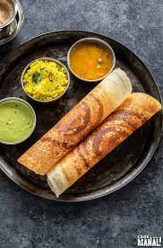

Dosa

DESCRIPTION:
Dosa has gained popularity and is available all
over India and many places in the world. Thanks to
people like NYC Dosa man and others, this dish has
gained acceptance all over the world.
It has a few benefits as it is a fermented dish and
is good for the gut microbiome
INGREDIENTS:
- Urad dal
- Idli rice
- Salt
- Water
STEPS:
- Soak the urad dal and rice separately overnight.
- Let it soak for 6 hours.
- After that grind the rice first in wet grinder.
- Then add the urad dal and keep grinding till the batter is ready.
- You are looking for a slightly thick consistency.
- Rest the batter for 14 hours.
- Get the utensils ready.
- Pour the batter into the pan and spread it out in an even circular motion
- After one side is roasted, flip it.
- Take it out and serve